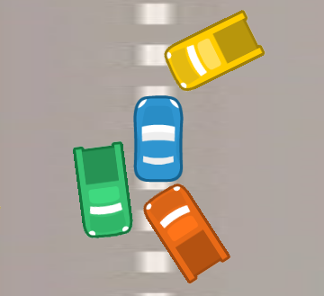
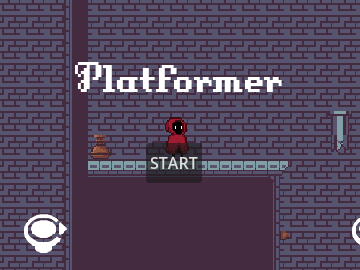

My Projects

¡Bumpers Cars!
A game where you must avoid crashing with other cars and make the highest record possible, compete with your friends.

¡Flappy Fish!
The game consists of making the fish jump and avoid colliding with the sewers and the ground, compete with your friends.

¡Platformer!
The game consists of reaching the goal avoiding obstacles, in case of power you will return to the beginning, compete with your friends to see who is the best

¡DuAl JuMp!
A game that involves solving puzzles and reaching the final level, but you have to do it with a friend and collaborate with each other.

¡Aero Rush!
A game that consists of dodging the ships that are coming towards you, and making the highest score possible, but don't forget to choose your favorite ship.
Contact
You can write me at: marcossosabs@gmail.com